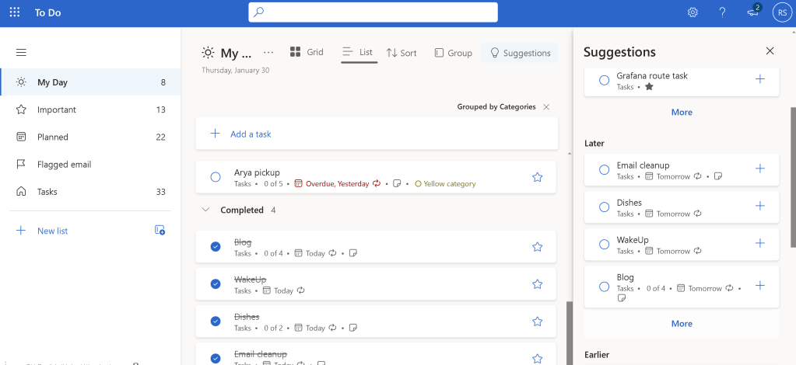
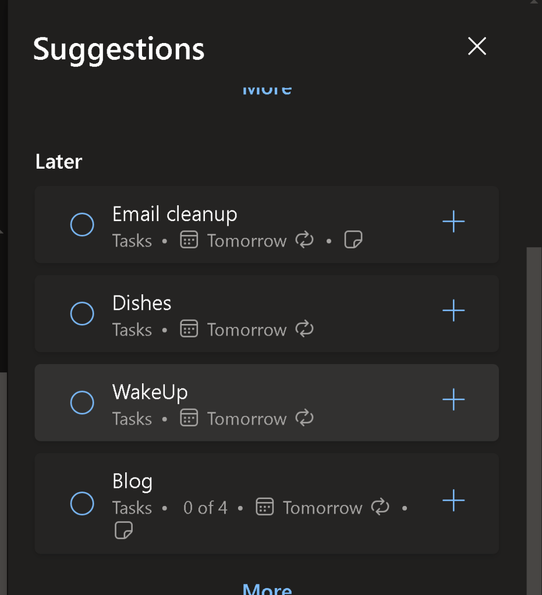
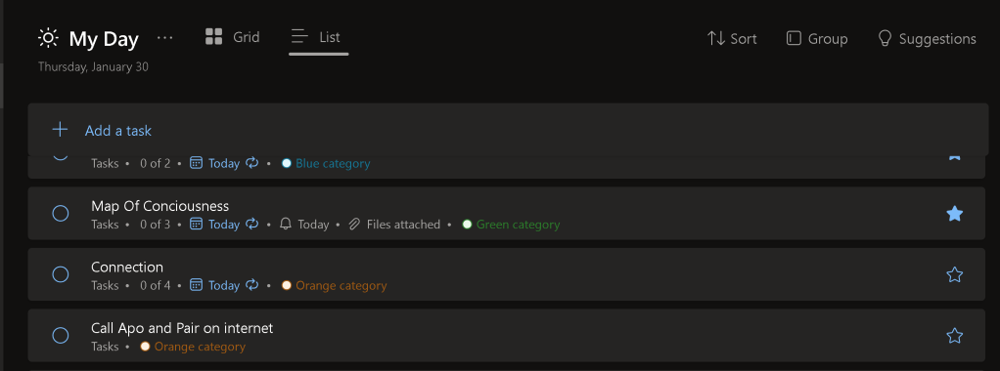

🚀 Boost Your Productivity with Microsoft To-Do: Plan Today & Tomorrow Like a Pro! 📅✅
Daily Tasks Popping Up in MS Todos For Tomorrow
Are you struggling to stay organized and prioritize your tasks? Do you feel like your to-do list is never-ending? Worry no more! In this blog post, I’ll show you how to use Microsoft To-Do to effectively plan your day and tomorrow using existing lists. Let’s dive in! 🏊♂️
🎯 What I Want to Achieve
My goal is simple: Plan today and tomorrow efficiently using Microsoft To-Do. I want to leverage my existing lists to avoid duplication and ensure I’m focusing on the right tasks at the right time. Whether you’re a student, professional, or just someone looking to get more organized, this method will work for you! 💡
🛠️ How to Use Microsoft To-Do for Daily Planning
1. Review Your Existing Lists 📋
Start by reviewing the lists you’ve already created in Microsoft To-Do. These could be work-related tasks, personal errands, or long-term goals. The key is to centralize everything in one place.

2. Create a "Today" and "Tomorrow" List ⏳
To keep things simple, create two new lists:
-
Today: Tasks you need to complete by the end of the day.
-
Tomorrow: Tasks you want to tackle the next day.
This helps you focus on what’s urgent and avoid feeling overwhelmed.

3. Prioritize with My Day 🌟
Microsoft To-Do has a fantastic feature called My Day. Use it to add tasks from your existing lists that you want to focus on today. This ensures you’re not missing anything important while keeping your lists clean.

4. Set Reminders and Due Dates ⏰
Don’t forget to set reminders and due dates for your tasks. This will help you stay on track and ensure nothing slips through the cracks. Microsoft To-Do will send you notifications, so you’ll never miss a deadline! 🚨
5. Reflect and Adjust at the End of the Day 🔄
At the end of each day, take a few minutes to review what you’ve accomplished. Move any unfinished tasks to your Tomorrow list or reschedule them. This habit will help you stay consistent and improve your productivity over time.
💡 Pro Tips for Success
-
Color-code your lists: Use different colors for work, personal, and long-term goals to make them visually distinct.
-
Break down big tasks: If a task feels overwhelming, break it into smaller subtasks.
-
Sync across devices: Microsoft To-Do works seamlessly on your phone, tablet, and computer, so you can stay organized wherever you are.
🚀 Why This Works
By using Microsoft To-Do to plan today and tomorrow, you’re creating a clear roadmap for your tasks. This method reduces stress, improves focus, and ensures you’re making progress on your goals. Plus, it’s super easy to get started!
🔗 Connect with Me
If you found this post helpful, let’s stay connected! I’d love to hear how you’re using Microsoft To-Do to boost your productivity.
-
💼 LinkedIn: Rifat Erdem Sahin
-
🐦 Twitter: @rifaterdemsahin
-
🎥 YouTube: Rifat Erdem Sahin
-
💻 GitHub: rifaterdemsahin
🌟 Your Turn!
Give Microsoft To-Do a try and let me know how it works for you. Share your tips and tricks in the comments below or tag me on social media. Let’s get organized together! 🚀
Screenshots are for illustrative purposes only. Replace with your own for a personalized touch! 😊
Imported from rifaterdemsahin.com · 2025